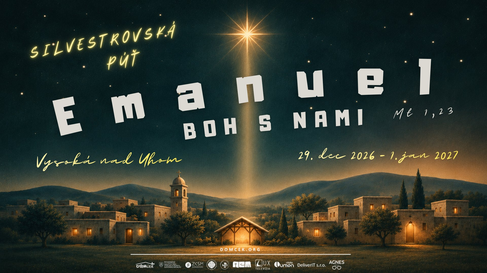
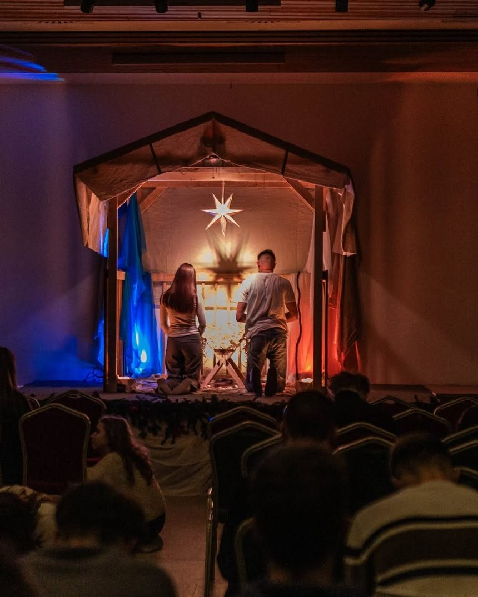
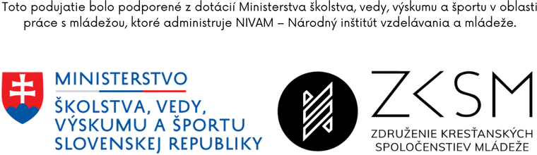
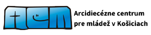

Silvester 2026 – silvestrovská púť mladých. Emanuel, Boh s nami.

Emanuel – Boh s nami
„…a dajú mu meno Emanuel, čo v preklade znamená: Boh s nami.“
Mt 1, 23
Napriek tomu, že náš život tvoria mnohé vzťahy, patríme do konkrétnej rodiny či komunity a dennodenne stretávame množstvo ľudí, predsa sa niekedy cítime opustení a sami! Tento pocit osamelosti sa zväčšuje práve v momentoch, keď prežívame nezáujem, nepochopenie či ľahostajnosť tých, ktorí sú nám najbližší. A neraz to zažívame aj vo vzťahu s Bohom.
No je to naozaj tak? Sme vtedy naozaj úplne sami? Jeden z najkrajších prísľubov, ktoré nám Boh zanechal, je, že On je Boh s nami – Emanuel. On bol, On je a vždy bude pri nás, aj keď to aktuálne necítime a neprežívame. Toto tajomstvo si uvedomujeme zvlášť počas Vianoc, keď Boh definitívnym spôsobom prichádza medzi nás vo svojom Synovi Ježišovi, ktorý odteraz bude s nami až do skončenia sveta (Mt 28, 20). Preto sa nebojme! On určite bol, je a bude s nami aj v tomto novom roku, do ktorého spoločne vstúpime.
Nech už prechádzaš čímkoľvek, tento čas môžeš prežiť vo vedomí, že nikdy nie si sám! Tak neváhaj a príď aj Ty na Silvester do Vysokej nad Uhom od 29. decembra 2026 do 1. januára 2027.
Prihlás sa
Hostia
Čoskoro zverejníme
Hostí tohto ročníka pridáme sem a oznámime ich aj na Instagrame a Facebooku.
Program
- Utorok 29. decembra
- Streda 30. decembra
- Štvrtok 31. decembra Silvester
- Piatok 1. januára Nový rok
Podrobný program čoskoro zverejníme.
Prihlasovanie
- Študenti a členovia ZKSM 80 €
- Pracujúci 90 €
Ubytovanie je v cene, stravu zabezpečuje Domček.
- Účastníci
- do 18. decembra 2026
- Dobrovoľníci
- do 11. decembra 2026
Ak sa kapacita naplní skôr, prihlasovanie ukončíme skôr.
Prihlás saFormulár Google sa otvorí v novom okne.


Časté otázky
Pre akú vekovú kategóriu je Silvester 2026 určený?
Na silvestrovskú púť pozývame mladých vo veku 15 až 35 rokov. Ak ešte nemáš 18 rokov, po registrácii nám treba poslať Potvrdenie rodiča, resp. zákonného zástupcu.
Som študent alebo člen ZKSM – mám nárok na zľavu?
Áno. Zľava pre študentov a členov ZKSM je 10 €, cena Silvestra je teda 80 €.
Dokedy sa môžem prihlásiť?
Účastníci sa môžu prihlásiť do 18. decembra 2026, dobrovoľníci do 11. decembra 2026. Ak sa kapacita naplní skôr, prihlasovanie ukončíme skôr.
Čo robiť, ak som sa prihlásil, ale nakoniec nemôžem prísť?
Napíš nám na pute@domcek.org alebo do správy na Facebooku či Instagrame.
Za akých podmienok môžem pomôcť ako dobrovoľník?
Ak máš aspoň 17 rokov a bol si účastníkom aspoň na jednej púti organizovanej Domčekom, určite ťa pozývame do služby. Dobrovoľníci sa prihlasujú do 11. decembra 2026.
Bude na Silvestri zabezpečená strava?
Áno. V utorok je večera z vlastných zásob, stravu na ostatné dni zabezpečuje Domček. Ak máš nejakú diétu, napíš nám to do poznámky pri registrácii.
Bude zabezpečené ubytovanie?
Áno, ubytovanie je v cene Silvestra. Treba si však priniesť spacák.
Ako je zabezpečená doprava?
Po registrácii dostaneš prístup k zdieľanej tabuľke, kde si môžeš nájsť odvoz alebo ho ponúknuť ostatným.
Bude po skončení programu odvoz do Michaloviec?
V piatok po skončení programu bude pri dostatočnom záujme zabezpečený autobus do Michaloviec o 11:00 (príplatok 2 €).
Čo je príprava na silvestrovský večer?
Je to čas, keď sa všetci spoločne zapojíme do príprav na slávnostný silvestrovský večer, ktorý je vyvrcholením celej púte a roka 2026 a zároveň začiatkom nového roka 2027. Každý sa môže zapojiť do jednej zo služieb: stravovacej, hudobno-speváckej, upratovacej, koledníckej, estetickej alebo do služby podľa potreby.
Čím je Silvester v Domčeku iný?
Trvá štyri dni. Skladá sa z duchovnej obnovy a samotného Silvestra. Počas duchovnej obnovy rekapitulujeme celý predošlý rok, ďakujeme, prosíme a odovzdávame ten nasledujúci. Samotný Silvester prežívame v čistej radosti, v kruhu tých, ktorých máme radi. Starému roku tak dávame zbohom a nový chceme prežiť s Bohom. 😇
Kde dostanem odpovede na ďalšie otázky?
Napíš nám na pute@domcek.org alebo do správy na Facebooku či Instagrame.
Partneri

